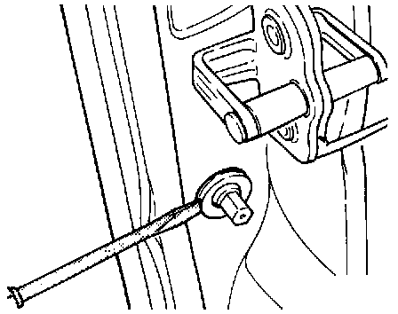

Dome Lamp Switch: Service and Repair
Removing and Installing Left Front Door Contact Switch -F2-:NOTE: The procedure is the same for left rear door contact switch -F10-, right front door contact switch -F3- and right rear door contact switch -F11-.
Removing:

- Remove rubber boot.
- Carefully pry out door contact switch with screwdriver.
- Remove switch connector.
Installing:
- Install switch connector.
- Insert switch into hole and press in until fully seated.
- Install rubber boot.